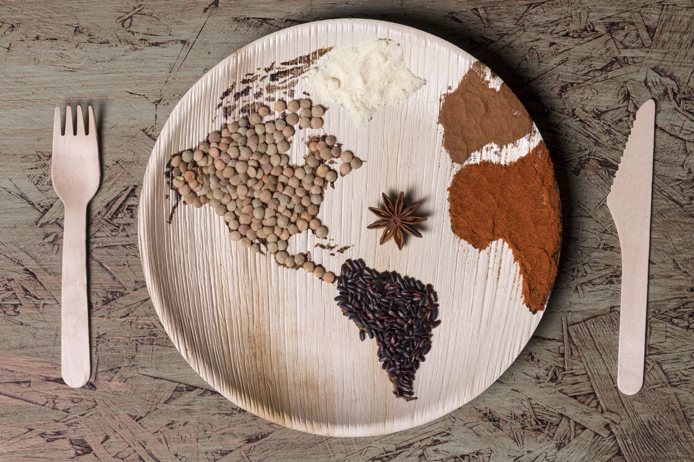

Proyecto social: Hambre Cero
Integrantes:
- Luisa Hernández Luna
- Paulina Castro Mata
- Diana Casaos Díaz
- Sofía Zúñiga López
Campus: UVM Lomas Verdes
Docente: Beatriz Janet Mora Granados
Integrantes:
Campus: UVM Lomas Verdes
Docente: Beatriz Janet Mora Granados